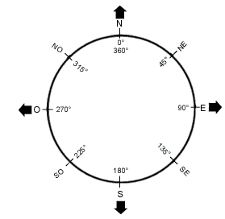

Aide en ligne de Starium
But du jeu
Le but du jeu est de neutraliser tous les Kipicks qui sont dans le tableau. Pour cela, vous disposez de votre vaisseau appelé l'Endurci.
Ecran principal
Quatre grande zones composent votre écran :
- A gauche, les informations sur le jeu, l'état de votre vaisseau, ses dommages et la ligne de commande.
- En haut, le tableau représente la carte l'espace connu dans cette zone. Par défaut, rien n'apparaît puisque c'est la zone qu'il vous reste à découvrir.
- En dessous, les messages du jeu qui contiennent le résumé des dernières actions et leurs résultats.
- En bas, le secteur qui affiche le détail de ce qui vous entoure. Il s'agit de votre environnement proche.
Le tableau
...
Le secteur
...
L'écran de contrôle
...
Liste des commandes
Commande 1 : mouvement du vaisseau
La commande 1 ou les boutons "Mouvement tableau" et "mouvement secteur" permettent de faire bouger le vaisseau. Deux choix vont alors s'offrir à vous :
- soit vous voulez voyager dans le secteur, de proche en proche en quelque sorte
- soit vous voulez faire un plus long parcours et voyager de secteur en secteur ce qui est nettement plus rapide car vous pouvez utiliser de moteurs capables de parcourir plusieurs secteurs d'un coup.
Tout dépend de la distance que vous souhaitez parcourir. Il faut cependant noter que le voyage de secteur en secteur peut être endommagé par un tir ennemi. Vous devrez alors voyager de proche en proche dans le secteur.
Une fois la décision prise, le vaisseau vous demande le nombre de cases dont vous voulez voyager. Il peut très bien s'agir du nombre de cases sur le tableau ou dans le secteur. Si vous dépassez les bords d'un secteur, vous changerez de secteur. Lors d'un voyage à longue distance, le vaisseau va d'abord prendre de la vitesse. Assurez-vous que la voie est libre pour éviter d'entrer en collision avec une étoile ou un ennemi. S'il y a une collision, l'ordinateur annulera le voyage. Vous risquez de recevoir un dégât.
Ensuite, l'ordinateur vous demande quel cap prendre. L'univers étant plat, vous n'avez pas besoin de vous demander où il vous faut aller dans le plan de la largeur. La direction qu'il demande est celle de la direction en degré qu'indique une simple boussole. Voici ci-dessous les degrés à utiliser en fonction des directions.

Chaque case parcourue dure 1 mois galactique. PS: Il y a 10 mois galactiques dans une année galactique.
Commande 2 : régénération
La commande 2 vous permet de vous immobiliser totalement dans le but de recharger vos batteries. La recharge permet de récupérer environ de l'ordre de 4% d'énergie par mois. Plus vous resterez longtemps, plus votre niveau d'énergie augmente. Il ne peut cependant pas dépasser la limite imposée par votre vaisseau. Il vous faut également veiller au temps qui risque de passer nettement plus vite.
Durant ce temps, vous pouvez également réparer des dégâts qui ont eu lieu. Dans ce cas, vous aurez un message vous signalant une réparation.
A noter que ceci profite également à vos ennemis qui ont aussi le temps de se régénérer et de réparer leurs dégâts. Lorsque des ennemis sont présents dans le secteur, cette commande n'est pas disponible.
Commande 3 : radar longue portée
Le radar (commande 3) vous permet de scanner tout ce qu'il y a autour de votre vaisseau spatial. Sa portée étant limitée, il ne peut scanner que dans un rayon de un secteur à la ronde dans le tableau. Si vous êtes sur un bord du tableau, le scan se fait de l'autre côté. Le radar peut être endommagé. Une analyse radar coûte en général 20 unités d'énergie.
Commande 4 : laser
Le laser (commande 4) est une des armes les plus puissantes sur le marché. Vous indiquez le niveau d'énergie que vous voulez qu'il envoie. Chaque Kipick recevra un coup de ce laser haute performance. Il vous faudra malheureusement ménager vos batteries, car elles mettent plus de temps à se recharger que le laser n'en met à les décharger. Chaque coup que reçoit votre ennemi est proportionnel à sa distance par rapport à vous. Le laser peut être endommagé.
Commande 5 : torpille
Les Torpilles (commande 5) sont très efficaces contre les Kipicks qui ont encore beaucoup d'énergie en réserve. Leur nombre étant limité, vous devez en faire bon usage et surtout ne pas vous tromper dans la direction en degré pour l'envoyer. Les torpilles n'ont pas de tête chercheuse, car les Kipicks ont inventé un système de brouillage semblable au vôtre. C'est ce qui explique qu'il faut entrer l'angle en degré. Votre principale difficulté sera de bien viser votre ennemi, mais vous devriez y parvenir facilement ! Les Torpilles peuvent être endommagées. Pour rappel, voici les différents angles de visée :